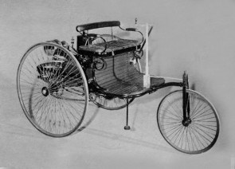
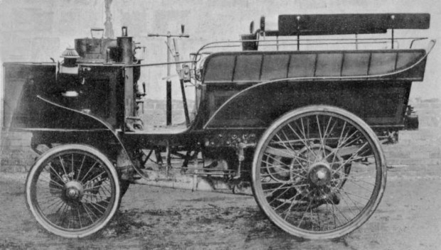

History of Sports Cars
Early History
It’s rather obvious that the first was the invention of the automobile itself. The first motorized vehicles were steam-driven tractors. But the purpose of tractors is not transportation, so they don’t qualify.
Although there are reservations among some historians, it is generally held that Karl Benz designed and built the first workable car propelled by an internal combustion engine in 1885. But in 1873, Frenchman Amédée Bollée, made a number of experimental steam-powered carriages. His son (of the same name) made a large steam mail coach as well as a smaller steam-driven car in 1885. These were essentially motorization of existing horse-drawn vehicles.
Benz’s idea, on the other hand, was to design a then-unique complete unit from scratch whose purpose was to transport people. His first car was a three-wheeler. Power was from a horizontal single-cylinder gasoline-driven water-cooled engine. It developed ¾ horsepower. A top speed of 8 mph was recorded during its first trials. Presently it resides in the Deutsches Museum in Munich.
The first competition for motorcars took place in France in 1894. It’s interesting to note, however, that the first competition for motorized vehicles for which I have found a record took place between two steam-driven tractors racing Madison to Green Bay, Wisconsin in 1878. The winner took 33 hours and 27 minutes to cover the 201 miles. The State of Wisconsin had promised prize money of $10,000. The legislators however, reneged, claiming that the vehicles were not “a cheap and practical substitute for a horse.” In the end, the State ponied up $5,000.
The 1894 race was initially planned as a reliability run between Paris and Rouen. At that time, there were no purpose-built race cars, so the event was for what we would now call production or touring cars. Right from the start, however, the competitors considered the run to be a race. Sixty-nine cars participated in a 50 km preliminary “selection” event. Twenty-five made the cut for the main event of 127 km. Count Jules-Albert de Dion was first with a time of 6 hours and 48 minutes. He averaged 19 km/hr. Second was Georges Lemâitre and then Auguste Doriot third, both in a Peugeot. René Panhard and Emile Levassor in Panhards were fourth and fifth. De Dion, however, was disqualified because his steam-driven car required a stoker which was against the rules. This should have made the official winner to be the Peugeot. The prize, however, was awarded to both Panhard and Peugeot when it was pointed out that the engines in the Peugeots had been supplied by Panhard.

The first international series was established by James Gordon Bennett, Jr., owner of the New York Herald. He proposed an annual event put on by automobile clubs of various European countries called the Gordon Bennett Cup. Entrants came from a number of European countries that had national teams. Each could enter three cars, but they had to be made in that country. The teams were distinguished by colors, starting a tradition that has continued to this day. The British were green, with red for Italy, white for Germany and blue for France.